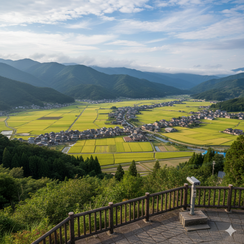

[ 画像：翠波山の頂上から見下ろす、一寸の乱れもない町並みの全景 ]

翠波山展望台
町全域を見渡せるパノラマスポット。夜間は景観保護（光害防止）のため、一切の照明が制限されており、完全な暗闇と星空を体験できます。懐中電灯の使用も条例により制限されています。
町全域を見渡せるパノラマスポット。夜間は景観保護（光害防止）のため、一切の照明が制限されており、完全な暗闇と星空を体験できます。懐中電灯の使用も条例により制限されています。
幕末の風景を今に伝える古い石碑。保存区域の核心部に位置し、周囲の静謐を保つため、私的な撮影や大声での会話はご遠慮いただいております。管理ボランティアの案内に従い鑑賞してください。
郷土の歩みを記録した写真資料などを展示。町指定の建築様式（翠波様式）で建てられた美しい外観が特徴です。館内では常に一定の周波数による音響調整が行われています。
当町では、屋根は「翠波色（すいはいろ）」、外壁は「胡粉色（ごふんいろ）」など、条例で指定された12色以外の使用が制限されています。これにより、町全体の視覚的ストレスを排除し、住民および訪問者の意識の安定を図っています。
20時以降の屋外照明の完全消灯推奨、および町全域での私的なスピーカー放送の制限を行っています。当町において「静寂」は公共の財産であり、最大の観光資源です。騒音は厳に慎んでください。
保存区域内では、腕章を着用したボランティアスタッフが常時巡回しております。道案内だけでなく、景観および静寂の維持のための指導を行う権限を有しております。スタッフからの指示は、町の調和を守るための「お願い」です。皆様のご協力をお願いいたします。